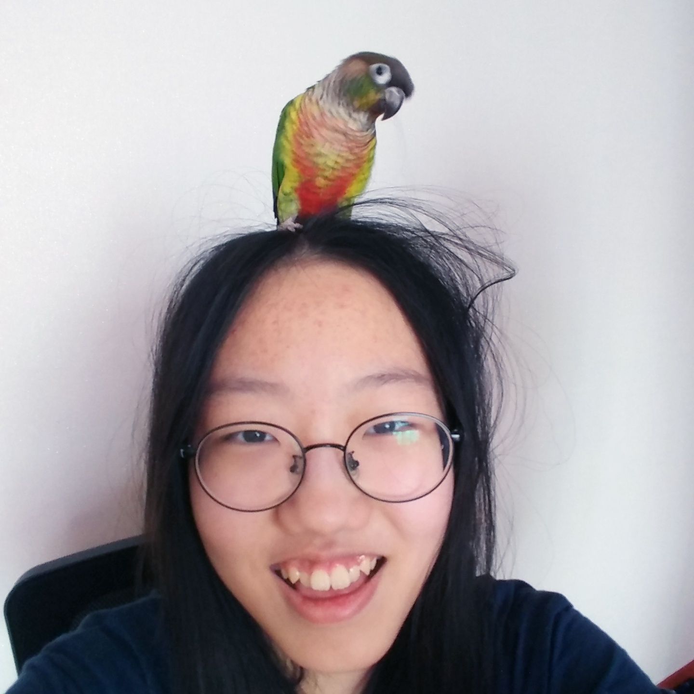

이서영
동명여자중학교 2학년에 재학하고 있고, 출판에 관심이 있습니다.

SCROLL TO VIEW

동명여자중학교 2학년에 재학하고 있고, 출판에 관심이 있습니다.
안녕하세요, 저는 동명여자중학교 2학년 이서영입니다.
부모님, 할머니, 동생, 앵무새들과 같이 삽니다. 부모님은 맞벌이를 하셔서 동생과 시간을 많이 보냅니다.
평소에 책 읽는것을 좋아해서 출판쪽에 관심이 많습니다.
그리고 앵무새를 좋아하는데, 그래서 집에서도 앵무새를 기릅니다. 두마리이고, 종은 옐로사이드 코뉴어입니다.

어떤 것을 결정할때 신중하게 생각해봅니다.

많은 것들을 시도해봅니다.

하나를 시작하면 꼭 끝을 냅니다.
게임을 하는것을 좋아합니다. 모바일 게임보다는 pc 게임을 좋아하고, 스토리와 결말이 있는 게임을 자주 합니다.
사진에 있는 게임은
큐브 이스케이프입니다.
앵무새들과 노는것도 저의 취미입니다. 앵무새들은 해씨를 정말 좋아하는데, 앵무새들에게 해씨를 줬을때 좋아하면서 먹는것을 보면 뿌듯합니다.